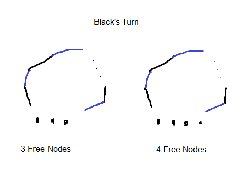

Nocycle game solved
Random number: 22
23rd January 2017
Just another result from the recent visit from the legend of all legends is the fact that the first player always loses the NoCycle game described in this post.
Suppose the first player colours in black, and the second player colours in blue, and that \(n > 5\). Then, whichever edge black chooses, blue can always choose an edge to form a 'black-blue-black-blue...' chain. Blue's initial strategy is just to increase this 'black-blue-black-blue' chain. If black tries to colour an edge adjacent to one of the nodes in the chain, then there must exist a node adjacent to two black edges, and blue can complete the triangle to win the game. Hence, at each turn, black has two options, 1) is to continue the chain (forming an alternating chain with black on both ends) or 2) is to colour an unrelated edge (one that isn't adjacent to any coloured edges so far). If black chooses option 1), blue can obviously just tack on an edge on either end of the chain to create a 'blue-black-...-blue-black' chain. If black chooses option 2, blue can connect one end of the chain to one of the nodes adjacent to the edge most recently coloured by black, lengthening the chain. Observing the 'free nodes' (the ones not adjacent to any edge so far), if black chooses option 1 then by the end of blue's turn there will be two less free nodes, and if black chooses option 2, then by the end of blue's turn there will also be two less free nodes, hence depending on the parity of \(n\) there are two 'end' cases that can occur:

It can be easily verified that in either case, with optimal play on blue's side, black will always lose. Hence, black always loses. (You have the \(n > 5\) condition at the beginning just to make sure that you can at least form some part of the blue black chain, but you can easily check first player loses for small \(n\) too (except \(n = 2\)))